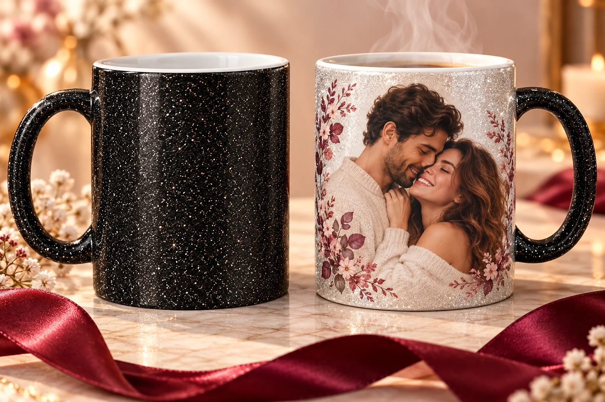

Подарунок про вас
Ваш спільний момент, важлива дата або слова, які хочеться зберегти.
Додайте гарячий напій — і з’явиться ваше фото. ✦ З блискітками.

Ваш персональний макет перед замовленням
Оплачуєте чашку при отриманні.
Оберіть від 1 до 10 варіантів.
Зараз створюємо фотомакети. Мультяшний портрет за фото потребує окремої підготовки.
Додайте будь-яке фото: спільне з вашою парою або два окремі — ваше та партнера.
Оберіть 1 або 2 фото. JPG, PNG або WebP до 15 МБ кожне.
Натискаючи «Створити фотомакети», ви погоджуєтеся передати фото OpenAI для створення дизайнів. Завантажуйте лише фото, які маєте право використовувати.
Попередні фотомакети. Фінальне оформлення погодимо перед друком.
Готові малюнки. Без додавання фото.
Чорна чашка з блискітками відкриває ваше фото. Подивіться справжнє відео.
Додаємо гарячу воду — і з’являється малюнок.
Ваш спільний момент, важлива дата або слова, які хочеться зберегти.
Спочатку подивіться фотомакет. Остаточне оформлення погодимо перед друком.
Відправляємо без передоплати. Чашку оплачуєте при отриманні.
Уточнюємо фото, напис і дату. Друкуємо після вашого підтвердження.
Доставляємо по Україні. Перевізника, адресу та термін відправлення погоджуємо під час замовлення.
Вартість доставки та можлива комісія за післяплату — окремо, за тарифами перевізника. Підсумкові умови погодимо до відправлення.
Холодна — чорна з блискітками. Від гарячого напою проявляється малюнок. Коли охолоне, знову потемніє.
Фото або готова ілюстрація — 349 грн. Календар або колаж — 399 грн. Мультяшний портрет — 449 грн. Доставку погоджуємо окремо.
Після погодження макета. Термін виготовлення та відправлення уточнимо під час замовлення. Передоплата не потрібна.